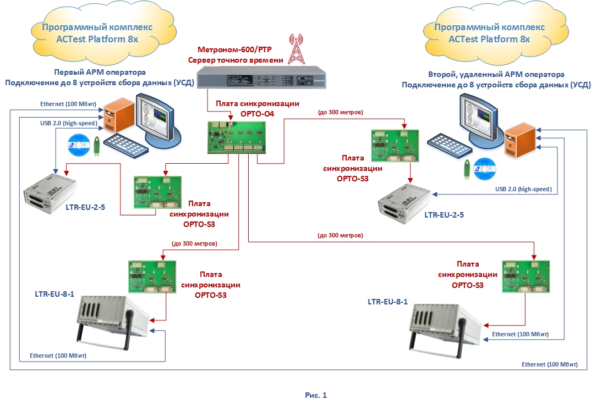
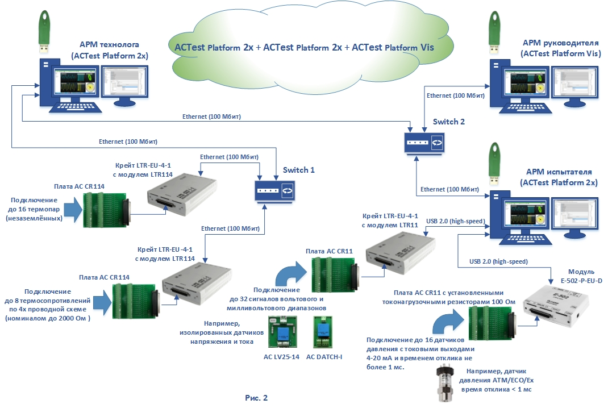
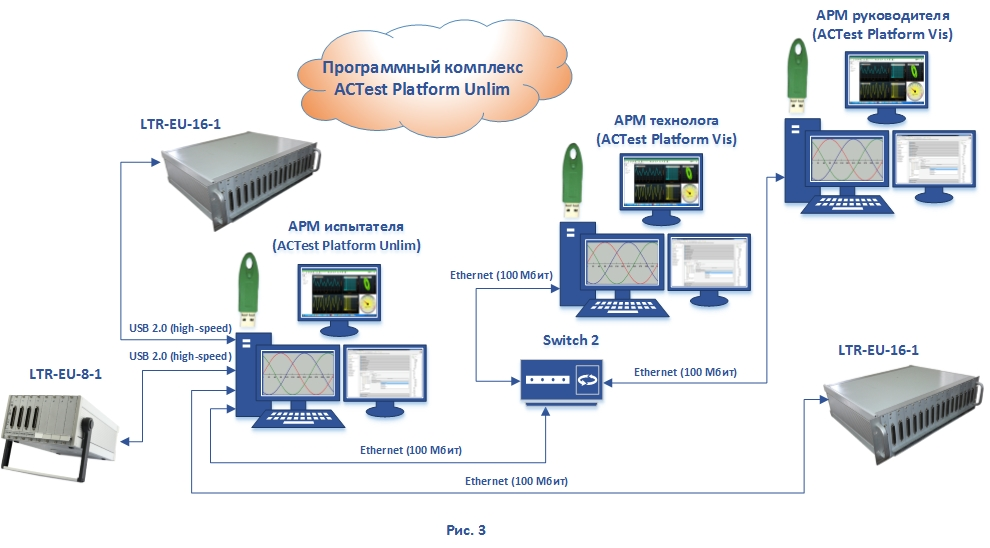
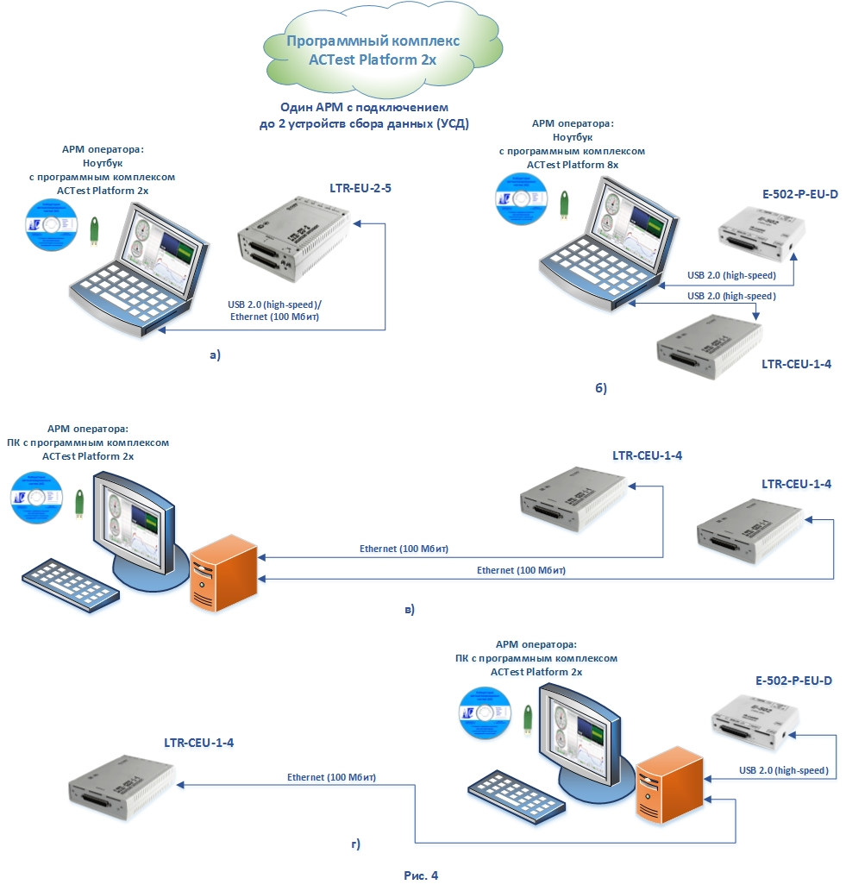

Красным цветом на рисунке приведен пример реализации системы синхронизации сбора данных от сигналов точного времени ГЛОНАСС / GPS для больших распределенных систем автоматизации измерений. Для создания многоуровневых распределенных систем автоматизации больших технологических установок или целых предприятий необходимо создание дополнительных автоматизированных рабочих мест для выполнения административных функций: управления пользователями и разрешениями, управление справочной информацией с другими источниками через встроенные механизмы экспорта/импорта данными, анализа результатов и составления отчетов. Именно для таких задач и предназначен Программный комплекс ACTest Platform Vis - АРМ визуализации, получение данных только по сети с других АРМ.
Здесь сбор данных производят только два автоматизированных рабочих места, созданных на основе двух Программных комплексов ACTest Platform 2x, каждый из которых, в свою очередь, производит сбор данных с двух устройств сбора данных (УСД). Третье автоматизированное рабочее место – АРМ руководителя создан с применением Программного комплекса ACTest Platform Vis и работает только с данными полученными по сети и зарегистрированными первыми двумя АРМ. В целях оптимизации стоимости программного обеспечения для создания больших многоуровневых, распределенных, измерительных систем с большим числом измерительных каналов (от 512 каналов и более) был создан и предоставлен заказчикам Программный комплекс ACTest Platform Unlim, состоящий как из самого приложения ACTest Platform Unlim, предназначенного для организации автоматизированного рабочего места с подключением неограниченного количества устройств сбора данных (УСД), так и входящих в его комплект поставки двух Программных комплексов ACTest Platform Vis.
Нижний уровень автоматизированной системы это один АРМ сбора данных, выполненный на основе Программного комплекса ACTest Platform Unlim с подключением к нему устройств сбора данных (УСД) – двух шестнадцатиместных крейтов LTR-EU-16-1 и одного восьмиместного крейта LTR-EU-8-1. Здесь применено два вида подключений, когда, например, два крейта в этой системе располагаются на автоматизированном рабочем месте и подключаются по USB 2.0 (high-speed) и один крейт с удаленным расположением подключаются по Ethernet (100 Мбит). Верхний уровень этой автоматизированной системы это два автоматизированных рабочих места (АРМ) визуализации, созданных на основе двух Программных комплексов ACTest Platform Vis. Эти два АРМ работают только с данными полученными по сети.
Рис. 4-а) это небольшая автоматизированная система измерений с ближним чрез USB 2.0 (high-speed) или удаленным через Ethernet (100 Мбит) подключением двухместного крейта LTR-EU-2-5 с двумя модулями LTR (двумя УСД); Рис. 4-б) аналогичная автоматизированная система измерений с ближним, чрез USB 2.0 (high-speed), подключением двух одноместных крейтов LTR-CEU-1-4 с модулями LTR (двух УСД); Рис. 4-в) распределенная удаленная система с применением сетевых подключений по Ethernet (100 Мбит) двух одноместных крейтов LTR-CEU-1-4 с модулями LTR (двух УСД); Рис 4-г) распределенная система автоматизации измерений с одним АРМ и различными (по USB 2.0 (high-speed и Ethernet (100 Мбит), одновременными подключениями двух устройств сбора данных (УСД) с разными аппаратными и программными интерфейсами.